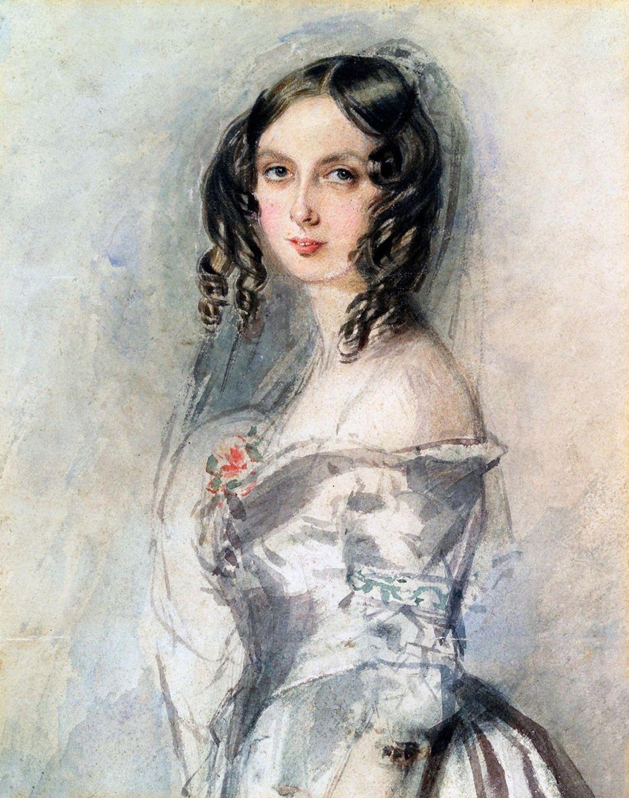
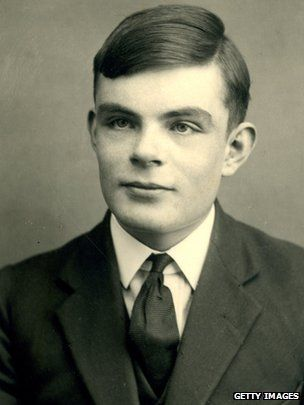

Fundamentos da Engenharia
Scrum
O Scrum é uma metodologia ágil usada para gerenciar projetos, principalmente na área de tecnologia e
desenvolvimento de software. Nesse método, o trabalho é dividido em ciclos curtos chamados Sprints, que
geralmente duram de uma a quatro semanas. Durante esses ciclos, a equipe desenvolve partes do projeto e
entrega resultados de forma gradual. O Scrum também define alguns papéis importantes, como o Product Owner,
o Scrum Master e o time de desenvolvimento. A ideia principal é melhorar o trabalho em equipe, organizar as
tarefas e permitir ajustes constantes no projeto.

Charles Babbage
Charles Babbage foi um matemático, engenheiro e inventor inglês do século XIX, conhecido como o “pai do
computador”. Ele idealizou máquinas revolucionárias como a Máquina Diferencial e a Máquina Analítica,
que já possuíam conceitos semelhantes aos computadores modernos.

Ada Lovelace
Ada Lovelace foi uma matemática inglesa e é considerada a primeira programadora da história. Ela criou
o primeiro algoritmo destinado a ser processado por uma máquina e teve ideias muito à frente do seu tempo.

Alan Turing
Alan Turing foi um matemático e cientista da computação britânico, considerado um dos pais da computação
moderna. Ele criou a Máquina de Turing e ajudou a quebrar códigos na Segunda Guerra Mundial.